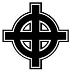

Wichtiger Hinweis
Diese Anwendung dient ausschließlich zu Bildungs- und Aufklärungszwecken. Die hier dargestellten Symbole, Codes und Begriffe werden von rechtsextremen und verfassungsfeindlichen Gruppen verwendet. Die Darstellung dieser Inhalte stellt keine Befürwortung oder Verbreitung dieser Ideologien dar, sondern soll helfen, diese zu erkennen und zu verstehen.
Kontext ist entscheidend: Viele Symbole (z.B. Runen, bestimmte Gesten oder Memes) haben einen legitimen, nicht-extremistischen Ursprung. Ihre extremistische Bedeutung hängt stark vom Kontext, dem Träger und der Situation ab. Ein einzelnes Symbol ist selten ein eindeutiger Beweis.
Emoji-Symbolik & Dog Whistles
Emojis und kleine Symbole werden gezielt eingesetzt, um Botschaften zu verschleiern oder Gruppenzugehörigkeit zu signalisieren.
👌
Wurde als "White Power"-Zeichen umgedeutet (W + P). Entstand als Troll-Kampagne, wurde aber realweltlich von Extremisten übernommen.
⚡⚡
Steht symbolisch für die SS-Sieg-Rune; wird als Umgehung direkter Code-Symbole verwendet.
💙
Kennzeichen für AfD-Unterstützung in bestimmten Online-Kontexten; häufig in koordinierten Aktionen verwendet.
🤡 / "Honk Honk"
Clown- und "Honkler"-Meme, das eine nihilistische rechte Weltanschauung ausdrückt.
🥛
Milch als symbolische Andeutung für vermeintliche "weiße" Überlegenheit (Laktosetoleranz als dog whistle).
🐸
Pepe der Frosch: von harmlos zu einem von rechten Gruppen vereinnahmten Meme.
Zahlencodes
Zahlencodes werden als Chiffren für Buchstaben des Alphabets verwendet, um verbotene Slogans oder Namen zu verschleiern. Sie sind in der Szene weit verbreitet und finden sich auf Kleidung, Tattoos und in Online-Profilen.
18
Adolf Hitler
Steht für den ersten ('A') und achten ('H') Buchstaben im Alphabet. Dient als gängige Chiffre für Adolf Hitler.
88
Heil Hitler
Steht für den achten ('H') Buchstaben im Alphabet. "88" wird als Ersatz für den in Deutschland verbotenen Hitlergruß verwendet.
14
Die 14 Worte (Fourteen Words)
Ein Glaubensbekenntnis des US-amerikanischen Rechtsterroristen David Lane: "We must secure the existence of our people and a future for white children." (Wir müssen die Existenz unseres Volkes und eine Zukunft für weiße Kinder sichern.)
444
Deutschland den Deutschen (DdD)
Steht für den vierten ('D') Buchstaben im Alphabet. Eine gängige ausländerfeindliche Parole.
28
Blood & Honour
Steht für den zweiten ('B') und achten ('H') Buchstaben. Der Name eines internationalen, in Deutschland verbotenen Neonazi-Netzwerks.
19/8
Sieg Heil
Steht für den neunzehnten ('S') und achten ('H') Buchstaben im Alphabet. Eine Chiffre für den verbotenen Gruß "Sieg Heil".
1161
Anti-Antifa-Aktion
Wird als Code für "Anti-Antifa-Aktion" verwendet. Tritt in Nutzernamen, Graffiti oder Gruppensymbolik auf und signalisiert feindselige Haltung gegenüber Antifa oder linken Gruppen.
111
Anti-Antifa (Variante)
Eine Kurzform/Verschlüsselung, die ebenfalls für "Anti-Antifa-Aktion" oder "AAA" stehen kann. Wird ähnlich wie 1161 zur Kennzeichnung militant orientierter Gruppen oder Aktionen genutzt.
168:1
Terrorverherrlichung (Referenz)
Wird genutzt, um sich auf Anschläge oder deren Opferzahlen zu beziehen (z.B. Oklahoma City) und dient in extremistischen Kreisen der Verherrlichung von Gewalt.
109
Antisemitische Mythen
Eine Zahl, die in antisemitischen Verschwörungsmythen auftaucht (z. B. falsche Behauptungen über Vertreibungen). Sie dient zur Verbreitung und Kodierung antisemitischer Narrative.
6MWE
Holocaust-Verherrlichung
Abkürzung für "6 Million Wasn't Enough" — eine offen antisemitische, verabscheuenswerte Verherrlichung des Holocaust. Solche Codes werden als Erkennungszeichen und Provokation genutzt.
Symbole & Farben
Viele Symbole werden aus historischen oder mythologischen Kontexten entlehnt und oft umgedeutet. Farben und Bildsprache dienen zusätzlich als unterschwellige Erkennungszeichen. Kontext entscheidet über Bedeutung.
Farben
Blau: Häufiges Identifikationsmerkmal für AfD-nahe oder neue rechte Gruppen. Das blaue Herz (💙) erscheint oft in organisierten Kommentar-Aktionen.
Schwarz-Weiß-Rot: Ablehnung der demokratischen Farben; wird als nostalgische Reminiszenz an imperiale/rechtsextreme Ideologien verwendet.
Schwarze Sonne
Ein aus der Wewelsburg bekanntes Mosaik, das aus zwölf gespiegelten Sig-Runen oder drei übereinandergelegten Hakenkreuzen besteht. Es ist ein zentrales esoterisches Symbol in der rechtsextremen Szene.
Wolfsangel
Ein historisches Symbol (ursprünglich ein Jagdgerät), das von verschiedenen NS-Einheiten (z.B. SS-Division "Das Reich") verwendet wurde. In stilisierter Form wird es von modernen Neonazi-Gruppen genutzt.
Odal-Rune
Diese Rune (o) stand im germanischen Kontext für Erbbesitz und Adel. Sie wurde von NS-Organisationen ("Blut und Boden"-Ideologie) verwendet. Eine Variante mit "Füßen" ist heute ein gängiges Erkennungszeichen.
Keltenkreuz

Ein ursprünglich christliches Symbol aus dem irisch-keltischen Raum. Es wurde von der "White Power"-Bewegung als Hakenkreuz-Ersatz adaptiert und ist in Deutschland in Verbindung mit rassistischen Gruppen verboten.
Triskele
Ähnlich der Schwarzen Sonne, ein Symbol aus drei Armen oder Beinen. Eine Variante, die einem Hakenkreuz ähnelt, wurde von einer südafrikanischen Neonazi-Gruppe (AWB) verwendet und ist in der Szene als Ersatzsymbol verbreitet.
Kleidungsmarken & Codes
Kleidung dient als wichtiges Erkennungsmerkmal. Einige Marken wurden gezielt für die rechte Szene gegründet, während andere (sog. "Nazihobbymarken") von ihr vereinnahmt wurden. Oft geht es um subtile Botschaften.
Thor Steinar
Eine der bekanntesten Marken, die sich gezielt an die rechtsextreme Szene richtet. Sie verwendet oft nordische Mythologie und Runen-ähnliche Logos. Der Vertrieb ist an vielen Orten (z.B. Landtage, Fußballstadien) verboten.
Consdaple
Eine Marke, die beliebt ist, weil sie die Buchstabenfolge NSDAP im Namen enthält. Das Tragen der Kleidung wird oft so arrangiert (z.B. unter einer offenen Jacke), dass nur dieser Teil sichtbar ist.
Lonsdale
Kontext ist hier alles. Die Marke (Boxsport) wurde in der Skinhead-Szene populär, weil sie die Buchstaben NSDA enthält (sichtbar unter offener Jacke). Die Firma Lonsdale selbst positioniert sich seit Jahren massiv gegen Rassismus, wird aber teils immer noch als Code getragen.
Fred Perry
Ähnlich wie Lonsdale. Das Poloshirt mit Lorbeerkranz wurde zu einer Art Uniform der "Alt-Right"-Bewegung in den USA (z.B. Proud Boys). Die Marke hat sich wiederholt davon distanziert und den Verkauf bestimmter Farbkombinationen in den USA eingestellt.
Gesten & Handzeichen
Neben dem offen verbotenen Hitlergruß existieren diverse Ersatzgesten, die als Erkennungszeichen dienen. Einige wurden gezielt als mehrdeutige "Troll"-Gesten popularisiert.
Kühnengruß / Widerstandsgruß
Ein Gruß mit ausgestrecktem Arm, bei dem Daumen, Zeige- und Mittelfinger abgespreizt werden (ähnelt einem 'W' für Widerstand). Er wurde vom Neonazi Michael Kühnen als Ersatz für den Hitlergruß eingeführt und ist in Deutschland strafbar.
"OK"-Handzeichen (White Power)
Ein klassisches Beispiel für Mehrdeutigkeit. Das international harmlose "OK"-Zeichen wurde durch eine 4chan-Kampagne als "White Power"-Symbol (W+P) umgedeutet. Obwohl als Scherz gestartet, wurde es von der "Alt-Right"-Bewegung und Attentätern (z.B. Christchurch) aufgegriffen und wird nun ernsthaft als Erkennungszeichen genutzt.
Musik & Subkulturen
Musik ist ein zentrales Medium zur Rekrutierung, Finanzierung und Gemeinschaftsbildung in der rechten Szene. Die Texte verbreiten Ideologie, Geschichtsrevisionismus und Feindbilder.
Rechtsrock / NS-Hardcore (NSHC)
Sammelbegriffe für diverse Musikgenres (Rock, Metal, Hardcore-Punk), deren Texte offen nationalsozialistisch, rassistisch, antisemitisch und gewaltverherrlichend sind. Viele Bands und Tonträger sind in Deutschland indiziert oder verboten.
Neofolk / Dark Folk
Einige Akteure in diesem Genre spielen bewusst mit totalitärer Ästhetik, heidnischen und völkischen Themen. Während nicht das gesamte Genre rechts ist, gibt es erhebliche Überschneidungen und Akteure mit direkten Verbindungen zur "Neuen Rechten". Die Abgrenzung ist oft schwierig.
Meme-Musik & Grauzone
Beispiele: Instrumentale oder out-of-context Songclips (z.B. populäre Dance- oder Club-Songs) werden wiederholend verwendet, um eine Stimmung zu erzeugen, die später mit Ideologie besetzt wird.
Lieder wie "L'Amour Toujours" können instrumental als Code genutzt werden; klassische Marschlieder oder Wehrmachtslieder erscheinen in remixten Kontexten.